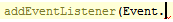
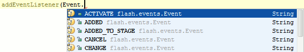

The SmartType code completion helps you find the methods and variables that are appropriate in the current context by analyzing the expected type of an expression. For example, type

and press &shortcut:SmartTypeCompletion;:

The SmartType completion also works after the return keyword, in an assignment, in an argument list of a method call and other places.